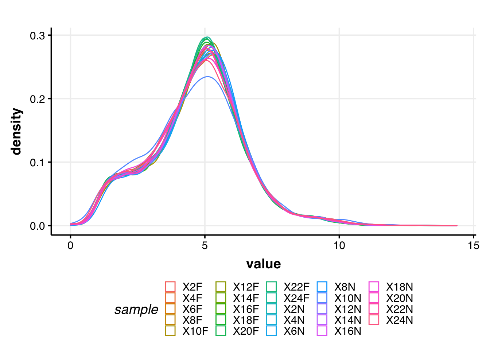

Locating harvester ant genes of interest in the daily gene expression network of carpenter ants
Biplabendu Das
06 April, 2023
What is this document?
This document provides the method used in Das and Gordon (in prep) to answer the following question:
Given genes of interest in Pogonomyrmex barbatus, for which temporal gene expression data is unavailable, can we infer if the genes of interest are involved in clock-controlled rhythmic processes?
The methods to perform the following steps were adopted from de Bekker and Das (2022) - build a circadian gene co-expression network (GCN), - how to annotate the network using published data, - infer functions of your gene-clusters-of-interest.
Step 1: Build circadian GCN
1.1 Load data
For the carpenter ant, Camponotus floridanus, Das and de Bekker (2022) have sampled forager and nurse brains every 2h, over a 24h period. We will utilize their published dataset to build a gene co-expression network (GCN) of ant brains.
The raw data is deposited in NCBI under BioProject PRJNA704762.
Description of the dataset: Three forager and three nurse ant brains were sampled and pooled for RNA extraction and Illumina sequencing, every 2h over a 24h period. This resulted in 24 RNASeq datasets for ant brains (12 forager and 12 nurse datasets over the course of a 24h LD 12:12 day).
One would need to perform the usual steps – trimming the reads, mapping the reads to the genome, and quantifying normalized gene counts – to obtain normalized gene expression data from the raw reads. At the end, for each gene in the genome, we should have the normalized expression for each time point, throughout the 24h day.
For the purpose of this tutorial, we assume that you have organized the processed data into a (gene-expr X time-point) format, in a chronological order.
X2F = forager brain sampled at ZT2 (2h after lights were turned on), X4F = forager brain sampled at ZT4, and so on.
Now we read the data into R.
# loading database which contains data for Das and de Bekker 2021 (bioRxiv)
db <- dbConnect(RSQLite::SQLite(), paste0(path_to_repo,"/data/databases/TC5_data.db"))
# extract the (gene-expr X time-point) data
dat <-
db %>%
tbl(., "annot_fpkm") %>%
## only forager expression data
# select(gene_name, X2F:X24F) %>%
## forager and nurse expression data
select(gene_name, X2F:X24N) %>%
collect()
dim(dat)## [1] 13813 251.2 Clean data
The above dataset contains all genes (n=13,813) in the ant genome. However, not all of these genes are expressed in the ant brain, and some are expressed at very low levels that are not biologically meaningful.
Therefore, we will only keep the genes that are “expressed” (≥1 FPKM) in the ant brain, for at least half of all the sampled time points.
# Which genes are expressed throughout the day in both forager and nurses brains?
daily.exp.genes <-
tbl(db, "expressed_genes") %>% # note, the information is already available in the database
filter(exp_half_for == "yes" & exp_half_nur == "yes") %>%
collect() %>%
pull(gene_name)
# Subset the gene-expr X time-point file
dat <- dat %>% filter(gene_name %in% daily.exp.genes)
dim(dat)## [1] 9139 25This is our cleaned, input data file. The daily expression for these 9139 genes will be used to create the circadian GCN of Camponotus floridanus.
1.3 Format data
To create the ant GCN, we will need to calculate the expression similarity (co-expression) of different gene pairs. Therefore, we would like to normalize the gene expression data by log2-transformation. Let’s do that and visualize the result.
datExpr = as.data.frame(t(log2(dat[-c(1)]+1)))
names(datExpr) = dat$gene_name
rownames(datExpr) = names(dat)[-c(1)]
# ----------------------------------------------------------- #
# USE THE FOLLOWING CODE TO CHECK IF YOU HAVE ANY BAD SAMPLES #
# ----------------------------------------------------------- #
# gsg = goodSamplesGenes(datExpr0, verbose = 3);
# gsg$allOK
#
# sampleTree = hclust(dist(datExpr0), method = "average");
# # Plot the sample tree: Open a graphic output window of size 12 by 9 inches
# # The user should change the dimensions if the window is too large or too small.
# sizeGrWindow(12,9)
# #pdf(file = "Plots/sampleClustering.pdf", width = 12, height = 9);
# par(cex = 1);
# par(mar = c(0,4,2,0))
# plot(sampleTree, main = "Sample clustering to detect outliers", sub="", xlab="", cex.lab = 1.5,
# cex.axis = 1.5, cex.main = 2)
# ----------------------------------------------------------- #
# save the number of genes and samples
# that will be used to create the circadian GCN
nGenes = ncol(datExpr)
nSamples = nrow(datExpr)
# visualize the log-transformed data
x = reshape2::melt(as.matrix(t(datExpr)))
colnames(x) = c('gene_id', 'sample', 'value')
ggplot(x, aes(x=value, color=sample)) + geom_density() + theme_Publication()
Figure 1. Normalized gene expression: The density plot above shows the distribution of log2-transformed gene expression values for each sample.
1.4 Calculate gene-gene similarity
Now, we can calculate the pairwise gene expression similarity for each of the 9139 genes and save it to a matrix.
I calculated expression similarity for all gene pairs in a dataset using Kendall’s tau, which measures the ordinal relationship between two variables and is used in rhythmicity detection algorithms [1].
# Calculate Kendall's tau-b correlation for each gene-gene pair
# sim_matrix <- cor((datExpr), method = "kendall") # this step takes time
# save(sim_matrix, file = paste0(path_to_repo, "/results/temp_files/sim_matrix_for_nur_TC5.RData")) # might be useful to save the sim_matrix and
load(paste0(path_to_repo, "/results/temp_files/sim_matrix_for_nur_TC5.RData")) # load it up
# save(sim_matrix, file = paste0(path_to_repo, "/results/temp_files/sim_matrix_for_TC5.RData")) # might be useful to save the sim_matrix and
# load(paste0(path_to_repo, "/results/temp_files/sim_matrix_for_TC5.RData")) # load it up
## Let's display a chunk of the matrix (code from Hughitt 2016; github)
heatmap_indices <- sample(nrow(sim_matrix), 500)
gplots::heatmap.2(t(sim_matrix[heatmap_indices, heatmap_indices]),
col=inferno(100),
labRow=NA, labCol=NA,
trace='none', dendrogram='row',
xlab='Gene', ylab='Gene',
main='Similarity matrix \n correlation method = "kendall" \n (500 random genes)',
density.info='none', revC=TRUE)Figure 2. Similarity matrix: The heatmap shows the pairwise Kendall’s tau correlation for a set of 500 genes randomly pulled from the 9139 genes expressed in the ant brain.
1.5 Create adjacency matrix
From the above similarity matrix, we then need to create the adjacency matrix needed for constructing a gene co-expression network.
To create the adjacency matrix, we need to first identify the soft-thresholding power by calling the network topology analysis function from the WGCNA package [2].
# Choose a set of soft-thresholding powers
powers = c(c(1:10), seq(from = 12, to=20, by=2))
# # Call the network topology analysis function
sft = pickSoftThreshold(datExpr, powerVector = powers, verbose = 5)## pickSoftThreshold: will use block size 4895.
## pickSoftThreshold: calculating connectivity for given powers...
## ..working on genes 1 through 4895 of 9139
## ..working on genes 4896 through 9139 of 9139
## Power SFT.R.sq slope truncated.R.sq mean.k. median.k. max.k.
## 1 1 0.845 1.900 0.995 3310.0 3390.00 4730
## 2 2 0.248 0.276 0.930 1720.0 1710.00 3200
## 3 3 0.343 -0.284 0.907 1050.0 988.00 2410
## 4 4 0.696 -0.580 0.922 701.0 616.00 1930
## 5 5 0.818 -0.762 0.951 499.0 402.00 1600
## 6 6 0.847 -0.896 0.942 371.0 272.00 1360
## 7 7 0.854 -0.992 0.933 285.0 190.00 1180
## 8 8 0.868 -1.060 0.935 225.0 136.00 1030
## 9 9 0.879 -1.110 0.940 181.0 99.10 919
## 10 10 0.874 -1.160 0.928 148.0 73.40 824
## 11 12 0.879 -1.220 0.928 103.0 42.20 676
## 12 14 0.879 -1.280 0.921 74.8 25.40 568
## 13 16 0.874 -1.310 0.916 56.1 15.80 485
## 14 18 0.842 -1.360 0.884 43.2 10.10 420
## 15 20 0.827 -1.390 0.874 34.0 6.64 367# Plot the results:
# sizeGrWindow(9, 5)
par(mfrow = c(1,2));
cex1 = 0.9;
# Scale-free topology fit index as a function of the soft-thresholding power
plot(sft$fitIndices[,1], -sign(sft$fitIndices[,3])*sft$fitIndices[,2],
xlab="Soft Threshold (power)",ylab="Scale Free Topology Model Fit,signed R^2",type="n",
main = paste("Scale independence"));
text(sft$fitIndices[,1], -sign(sft$fitIndices[,3])*sft$fitIndices[,2],
labels=powers,cex=cex1,col="red");
# this line corresponds to using an R^2 cut-off of h
abline(h=0.90,col="red")
# Mean connectivity as a function of the soft-thresholding power
plot(sft$fitIndices[,1], sft$fitIndices[,5],
xlab="Soft Threshold (power)",ylab="Mean Connectivity", type="n",
main = paste("Mean connectivity"))
text(sft$fitIndices[,1], sft$fitIndices[,5], labels=powers, cex=cex1,col="red")Figure 3. Soft-thresholding power: The above plots show the effect of soft-thresholding power on the topology and the mean connectivity of the transformed similarity matrix (network).
NOTE: The scale-free topology fit index reaches ~0.9 at a soft-thresholding power of 9 and it does not improve drastically beyond that.
So, we will set our soft thresholding power to 9 for creating the adjacency matrix.
## Specify the soft-thresholding-power
soft.power = 9
# Construct adjacency matrix
adj_matrix <- adjacency.fromSimilarity(sim_matrix,
power=soft.power,
type='signed'
)
save(adj_matrix, file = paste0(path_to_repo, "/results/temp_files/adj_matrix_for_nur_TC5.RData")) # might be useful to save the sim_matrix and
# save(adj_matrix, file = paste0(path_to_repo, "/results/temp_files/adj_matrix_for_TC5.RData")) # might be useful to save the sim_matrix and
# load(paste0(path_to_repo, "/results/temp_files/adj_matrix_for_TC5.RData")) # load it up
# Convert adj_matrix to matrix
gene_ids <- rownames(adj_matrix)
adj_matrix <- matrix(adj_matrix, nrow=nrow(adj_matrix))
rownames(adj_matrix) <- gene_ids
colnames(adj_matrix) <- gene_ids
## Same heatmap as before, but now with the power-transformed adjacency matrix
gplots::heatmap.2(t(adj_matrix[heatmap_indices, heatmap_indices]),
col=inferno(100),
labRow=NA, labCol=NA,
trace='none', dendrogram='row',
xlab='Gene', ylab='Gene',
main='Adjacency matrix',
density.info='none', revC=TRUE)Figure 4. Adjacency matrix: The heatmap shows the result of the power-transformation on the similarity of the 500 random genes shown previously in Figure 2. As you can see, only the highest pair-wise correlations are retained whereas the weak correlations tend to zero.
Step 2: Identify gene clusters
2.1 Create topological overalp matrix
# Turn adjacency into topological overlap
# TOM = TOMsimilarity(adj_matrix);
# dissTOM = 1-TOM
# save(dissTOM, file = paste0(path_to_repo, "/results/temp_files/dissTOM_for_nur_TC5.RData")) # might be useful to save the sim_matrix and
# save(dissTOM, file = paste0(path_to_repo, "/results/temp_files/dissTOM_for_TC5.RData")) # might be useful to save the sim_matrix and
load(paste0(path_to_repo, "/results/temp_files/dissTOM_for_nur_TC5.RData")) # load it up
# load(paste0(path_to_repo, "/results/temp_files/dissTOM_for_TC5.RData")) # load it up
# Call the hierarchical clustering function
geneTree = hclust(as.dist(dissTOM), method = "average")
# Plot the resulting clustering tree (dendrogram)
# sizeGrWindow(12,9)
plot(geneTree, xlab="", sub="", main = "Gene clustering on TOM-based dissimilarity",
labels = FALSE, hang = 0.04)Figure 5. Clustering tree: The figure shows the clustering tree (dendrogram) that results from hierarchical clustering of the TOM-based dissimilarity matrix and will be used for identifying modules of highly similar genes in the co-expression network.
2.2 Identify clusters
To cluster genes with similar daily expression pattern, we use the cutreeDynamic() function from the WGCNA package.
We need to provide a minimum size for the identified clusters or modules. This can set depending on the user’s question. In our case, we want to identify fairly large modules that are biologically meaningful (i.e., enriched in different GO/PFAM terms). As such, we set the minimum module size to 30. However, as you will see later, we will refine our cluster identification by merging very similar modules. As such, the choice of minimum module size should not affect cluster identification drastically.
# We like large modules, so we set the minimum module size relatively high:
minModuleSize = 30;
# Module identification using dynamic tree cut:
dynamicMods= cutreeDynamic(dendro = geneTree,
distM = dissTOM,
method = "hybrid",
verbose = 4,
deepSplit = 3, # see WGCNA for more info on tuning parameters
pamRespectsDendro = FALSE,
minClusterSize = minModuleSize);## ..cutHeight not given, setting it to 0.99 ===> 99% of the (truncated) height range in dendro.
## ..Going through the merge tree
##
## ..Going through detected branches and marking clusters..
## ..Assigning Tree Cut stage labels..
## ..Assigning PAM stage labels..
## ....assigned 5531 objects to existing clusters.
## ..done.# view number of genes in each module
table(dynamicMods)## dynamicMods
## 1 2 3 4 5 6 7 8 9 10 11 12 13 14 15 16
## 1337 1172 742 723 720 579 515 506 369 299 269 265 199 149 134 134
## 17 18 19 20 21 22 23 24 25 26 27 28 29 30
## 112 107 99 91 88 79 75 72 66 56 55 50 45 32# Convert numeric lables into colors
dynamicColors = labels2colors(dynamicMods)
table(dynamicColors)## dynamicColors
## black blue brown cyan darkgreen
## 515 1172 742 149 79
## darkgrey darkorange darkred darkturquoise green
## 72 56 88 75 720
## greenyellow grey60 lightcyan lightgreen lightyellow
## 269 112 134 107 99
## magenta midnightblue orange pink purple
## 369 134 66 506 299
## red royalblue saddlebrown salmon skyblue
## 579 91 45 199 50
## steelblue tan turquoise white yellow
## 32 265 1337 55 723In the initial cluster (module) identification step, WGCNA finds 30 modules. However, some of the identified modules might have very similar expression pattern and we would rather merge this closely related modules into one.
We do that in the next step.
2.3 Merge similar modules
# Calculate eigengenes
MEList = moduleEigengenes(datExpr, colors = dynamicColors)
MEs = MEList$eigengenes
# Calculate dissimilarity of module eigengenes
MEDiss = 1-cor(MEs, method = "kendall");
# Cluster module eigengenes
METree = hclust(as.dist(MEDiss), method = "average");
# Plot the result
# sizeGrWindow(7, 8)
plot(METree, main = "Clustering of module eigengenes",
xlab = "", sub = "MEDiss = 1-cor(MEs, method = 'kendall')")
# We choose a height cut of 0.2, corresponding to correlation of 0.8, to merge
MEDissThres = 0.2 # user-specified parameter value; see WGCNA manual for more info
# Plot the cut line into the dendrogram
abline(h=MEDissThres, col = "red")Figure 6. Merging similar modules: The above figure shows the similarity of the different gene modules using hierarchical clustering of the module’s eigenvalue (eigengene expression). The horizontal red line shows the cutoff used to merge similar modules.
We choose a cut height of 0.2, corresponding to correlation of 0.8, to merge similar modules. Although arbitrary, the cutoff was motivated by the number of modules we would like to retain in the GCN; in our case, a 0.2 threshold resulted in a total of 12 modules in the GCN (see below).
In the following code, we merge the similar modules and visualize the module assignments before and after merging.
# Call an automatic merging function
merge = mergeCloseModules(datExpr, dynamicColors, cutHeight = MEDissThres, verbose = 3)## mergeCloseModules: Merging modules whose distance is less than 0.2
## multiSetMEs: Calculating module MEs.
## Working on set 1 ...
## moduleEigengenes: Calculating 30 module eigengenes in given set.
## multiSetMEs: Calculating module MEs.
## Working on set 1 ...
## moduleEigengenes: Calculating 13 module eigengenes in given set.
## multiSetMEs: Calculating module MEs.
## Working on set 1 ...
## moduleEigengenes: Calculating 12 module eigengenes in given set.
## Calculating new MEs...
## multiSetMEs: Calculating module MEs.
## Working on set 1 ...
## moduleEigengenes: Calculating 12 module eigengenes in given set.# The merged module colors
mergedColors = merge$colors;
# Eigengenes of the new merged modules:
mergedMEs = merge$newMEs;
# sizeGrWindow(12, 9)
plotDendroAndColors(geneTree,
cbind(dynamicColors, mergedColors),
c("Dynamic Tree Cut", "Merged dynamic"),
dendroLabels = FALSE, hang = 0.03,
addGuide = TRUE, guideHang = 0.05)
# Rename to moduleColors
moduleColors = mergedColors
# Construct numerical labels corresponding to the colors
colorOrder = c("grey", standardColors(50));
moduleLabels = match(moduleColors, colorOrder)-1Figure 7. Modules of highly co-expressed genes: The above plot shows the results of module identification before (Dyanamic Tree Cut) and after (Merged dyanamic) similar modules were merged.
We identified 12 modules in the ant GCN, the size of each of these modules are shown below.
Note, WGCNA names the different modules as colors (see above), and the colors have no meaning. Therefore, it might be useful to rename the modules. In the next step we rename all the modules according to the following convention:
2.4 Calculate module-module similarity
Thus far, we have created the ant GCN (adjacency matrix) and identified 12 modules of highly co-expressed genes in the network.
Next, we investigate how the different modules are connected to each other in the GCN. To do so, we calculate the module-module similarity (Kendall’s tau-b correlation for pairwise module-eigengene expression) and then use the similarity matrix to create the module adjacency matrix.
The following code calculates the module adjacency matrix and visualizes it as a heatmap.
# Calculate similarity of the eigen-genes
sim_matrix_ME <- cor(mergedMEs, method = "kendall")
# calculate adj_matrix
adj_matrix_ME <- adjacency.fromSimilarity(sim_matrix_ME,
power=1, # DO NOT power transform
type='signed'
)
# coerce into a matrix
## GET THE NAMES OF THE MODULES
# module_ids <- rownames(adj_matrix_ME)
## CHANGE THE NAMES OF THE MODULES
module_ids <- data.frame(old_labels = rownames(adj_matrix_ME),
new_labels = paste0("module-", 1:nrow(adj_matrix_ME)))
adj_matrix_ME <- matrix(adj_matrix_ME, nrow=nrow(adj_matrix_ME))
rownames(adj_matrix_ME) <- module_ids$new_labels
colnames(adj_matrix_ME) <- module_ids$new_labels
# png(paste0(path_to_repo, "/results/figures/ME_adjacency.png"),
# width = 18, height = 18, units = "cm", res = 400)
gplots::heatmap.2(t(adj_matrix_ME),
col=inferno(100),
# labRow=NA, labCol=NA,
trace='none', dendrogram='row',
xlab='', ylab='',
# main='Similarity matrix - MEs \n correlation method = "kendall")',
main='Adjacency matrix - MEs',
density.info='none', revC=TRUE)# trash <- dev.off()Figure 8. Module-module relationships: The heatmap above shows the pairwise Kendall’s tau correlation (similarity) of the twelve modules identified in the ant GCN. Darker shades indicate low correlations and brighter shades indicate high correlations, as shown in the Color Key.
2.5 Visualize the network
To better visualize the global network – how the modules are connected to each other – we can simplify the network. That is, we remove most of the weak edges of the network and retain only the strong module-module correlations.
For example, to remove weak edges, we can set all correlations less than 0.6 to be zero. This will help us obtain a fairly clean network for visualization. To simplify further, we can assign the same edge weight for all correlations between 0.6 and 0.8 (e.g., 0.5), and a different edge weight for correlations ≥ 0.8 (e.g., 1).
The following code uses the igraph package in R to simplify and visualize the module-module relationships in the network.
pacman::p_load(igraph)
# get rid of low correlations (0.6 & 0.8 are arbitrary)
adj_matrix_ME[adj_matrix_ME < 0.6] <- 0
adj_matrix_ME[adj_matrix_ME < 0.8 & adj_matrix_ME>0] <- 0.5
adj_matrix_ME[adj_matrix_ME >= 0.8] <- 1
# build_network
network <- graph.adjacency(adj_matrix_ME,
mode = "upper",
weighted = T,
diag = F)
# simplify network
network <- igraph::simplify(network) # removes self-loops
# E(network)$width <- E(network)$weight + min(E(network)$weight) + 1 # offset=1
colors <- mergedMEs %>% names() %>% str_split("ME", 2) %>% sapply("[", 2)
V(network)$color <- colors
genes_ME <- factor(moduleColors, levels=colors) %>% summary()
V(network)$size <- log2(genes_ME)*2
V(network)$label.color <- "black"
V(network)$frame.color <- "white"
E(network)$width <- E(network)$weight^2*4
E(network)$edge.color <- "gray80"
# par(mar=c(0,0,0,0))
# remove unconnected nodes
# network <- delete.vertices(network, degree(network)==0)
# plot(network,
# layout=layout.fruchterman.reingold
# # layout = layout.kamada.kawai
# # layout = layout.kamada.kawai
# )
# trash <- dev.off()
## Circular layout
plot(network,
layout=layout.kamada.kawai,
# layout=layout.fruchterman.reingold
# layout=layout.graphopt
# layout=layout_in_circle,
# vertex.label=NA
# vertex.size=hub.score(network)$vector*30
vertex.shape="none"
)Figure 9. Visualizing the ant GCN: A simplified view of the connectivity patterns between the different gene modules of the ant GCN are shown. In our case, thick edges between two modules indicate correlations ≥ 0.8, thinner edges indicate correlations between (0.6, 0.8), and no edges indicate correlations < 0.6.
Step 3: Define genes of interest
3.1 Module-gene identity
Split all the genes into different sets, one for each module
# DEFINE GENES OF INTEREST (PART 3)
# Make a list that contains all gene names for a given cluster
module_color = colors
module = names(mergedMEs)
module_colors <-
data.frame(module_label=module) %>%
mutate(module_color = str_replace(module_label, "ME", ""))
module_genes <- list()
module_color <- module_colors$module_color
# Get the genes from each of the modules
for (i in 1:length(module_color)) {
module_genes[[i]] <- names(datExpr)[which(moduleColors==module_color[[i]])]
names(module_genes)[[i]] <- module_color[[i]]
}
names(module_genes) <- module_ids$new_labels
# LIST ONE - WGCNA modules
list1 <- module_genes
sapply(list1, length)## module-1 module-2 module-3 module-4 module-5 module-6 module-7 module-8
## 403 56 922 2269 127 179 664 2616
## module-9 module-10 module-11 module-12
## 209 66 1533 953.2 Camponotus floridanus
We want to identify the GCN modules that contain
- 24h oscillating genes in Cflo (for.rhy = 24h-rhythmic genes in forager brains, nur.rhy = 24h-rhythmic genes in nurses).
# DEFINE GENES OF INTEREST (PART 1)
# load the data table that contains the results from the rhythmicity analysis (eJTK-Cycle output)
rhy.trait.24 <- tbl(db, "ejtk_all") %>% select(gene_name:rhy) %>% collect()
# pull the gene names that are rhythmic in forager brains
for.rhy <- rhy.trait.24 %>% filter(caste=="for" & rhy=="yes") %>% pull(gene_name)
# pull the gene names that are rhythmic in forager brains
nur.rhy <- rhy.trait.24 %>% filter(caste=="nur" & rhy=="yes") %>% pull(gene_name)
# genes that show 24h rhythms in forager brains and 8h rhythms in nurses
for24.nur8 <-
tbl(db, "ejtk_8h_all") %>%
filter(caste=="nur" & rhy=="yes") %>% collect() %>% pull(gene_name) %>%
intersect(., for.rhy) %>% unique()
# DEFINE GENES OF INTEREST (PART 2)
## Genes underlying behavioral plasticity, i.e., DEGS (foragers v. nurses)
# genes higher expressed in forager brains (v. nurse brains)
for.up <- tbl(db, "TC5_DEGs_all") %>% filter(upregulation=="for") %>% collect() %>% pull(gene_name)
# genes lower expressed in for. brains (v. nurse brains)
for.down <- tbl(db, "TC5_DEGs_all") %>% filter(upregulation=="nur") %>% collect() %>% pull(gene_name)3.2 Pogonomyrmex barbatus
3.2.1 Pogo-Cflo orthologs
Read the one-to-one orthology data for P. barbatus and C. floridanus. The data was obtained by using the program proteinortho.
pogo.cflo <- read.csv(paste0(path_to_pogodata, "pogo_cflo_orthologs.csv"),
header = T, stringsAsFactors = F, na.strings = c(""," ",".", "NA")) %>% as_tibble()3.2.2 Response to humidity
- Read the data
- Set correlation threshold | cor(collective behav, geneexpression) = [-0.6,0.5]
- we selected the top 5% as the positively correlated genes
- similarly, bottom 5% as the negetively
- Note, we tried using higher thresholds, but the results do not change vastly.
# Read 2020_Friedman_et_al data -------------------------------------------
df.2020 <- read.csv(paste0(path_to_pogodata, "2020_friedman_Pbar_TPM_TraitCorr_dNdS.csv"),
header = T, stringsAsFactors = F, na.strings = c(""," ",".", "NA")) %>% as_tibble()
# note, it is unclear what the columns actually mean,
# but, below find an example of what we could do.
# Assumption: "humidity_cor" represents the correlation of gene expression to humidity changes
## Keep relevant columns
df.2020 <-
df.2020 %>%
select(pogo_gene = LOC,
humidity_cor:da_5ht_cor_colony_mean)
## Deciding on the threshold
## the first and the third quartiles
# Set humidity-expression correlation threshold
h.threshold <- quantile(df.2020$humidity_cor, prob=c(.05,.95), type=1)
# obtain pogo genes that satisfied the threshold
h.genes.pos <-
df.2020 %>%
as_tibble() %>%
select(pogo_gene,
humidity_cor) %>%
na.omit() %>%
filter(humidity_cor > h.threshold[2]) %>%
pull(pogo_gene)
h.genes.neg <-
df.2020 %>%
as_tibble() %>%
select(pogo_gene,
humidity_cor) %>%
na.omit() %>%
filter(humidity_cor < h.threshold[1]) %>%
pull(pogo_gene)
# get cflo orthologs for these genes
h.genes.cflo.pos <-
pogo.cflo %>%
select(pogo_gene, cflo_gene) %>%
distinct() %>%
filter(pogo_gene %in% h.genes.pos) %>%
pull(cflo_gene) %>% unique()
h.genes.cflo.neg <-
pogo.cflo %>%
select(pogo_gene, cflo_gene) %>%
distinct() %>%
filter(pogo_gene %in% h.genes.neg) %>%
pull(cflo_gene) %>% unique()
471 of the 516negatively correlated pogo genes had an ortholog in Cflo, whereas441 of the 516positivey correlated pogo genes had an ortholog in Cflo.
4.4 Annotate the network
Now, let’s see which modules, if any, in the cflo brain GCN do these genes reside?
The names have the following meanings:
- for-UP = genes upregulated in forager brains as compared to nurses
- for-DOWN = genes downregulated in forager brains as compared to nurses
- for-rhy24 = genes that show 24h-rhythmic expression in forager brains
- for24-nur8 = genes that show 24h-rhythmic expression in forager brains, but 8h rhythms in nurses
- pogo-rH-pos = Cflo-orthologs of pogonomyrmex genes whose expression show a positive correlation with collective response to abiotic changes
- pogo-rH-neg = Cflo-orthologs of pogonomyrmex genes whose expression show a negative correlation with collective response to abiotic changes
## LIST THREE - genes underlying behavioral plasticity and parasitic behavioral manipulation
list4 <- list(for.up, for.down, # same as list three
for.rhy, for24.nur8,
h.genes.cflo.pos, h.genes.cflo.neg)
names(list4) <- c("for-UP", "for-DOWN",
"for-rhy24", "for24-nur8",
"pogo-rH-pos", "pogo-rH-neg")
## CHECK FOR OVERLAP
## what is my background space? In other words, how many pogo genes have a cflo ortholog?
nGenes.pogo <- pogo.cflo %>% pull(cflo_gene) %>% unique() %>% length()
## make a GOM object
gom.1v4 <- newGOM(list1, list4,
genome.size = nGenes.pogo)
drawHeatmap(gom.1v4,
adj.p=T,
cutoff=0.01,
what="odds.ratio",
# what="Jaccard",
log.scale = T,
note.col = "grey60")